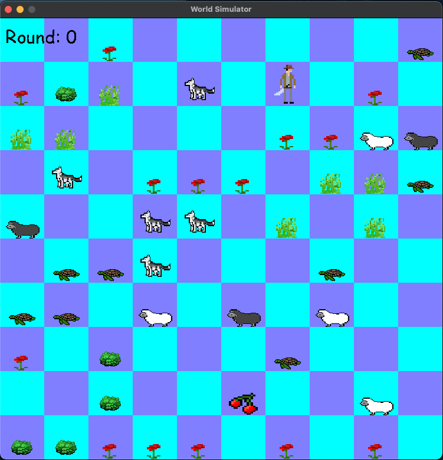

Virtual World Game
This is a simulation game that I made to improve my OOP skills
It contains a couple of organisms
Each of them has different characteristics and makes a move every round
Which makes the game unpredictable and interesting to play
Source Code
https://github.com/timschopinski/virtual_worldTechnologies:
- - Python
- - Pygame